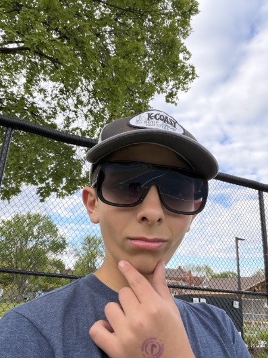

Xdax123
Xdax123 is the main programmer when it comes to making games in the source engine.
Internet_grampa
Internet_grampa is not actually 258 years old. That's just a myth.
Lilhawkeye5
Lilhawkeye5 is a potato that likes hawks.
Elijah
Elijah.

Shabald
Shabald is not actually bald and likes food.